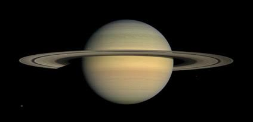
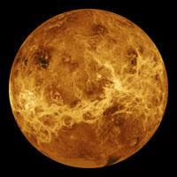
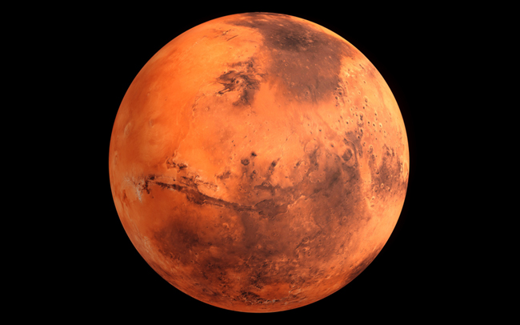
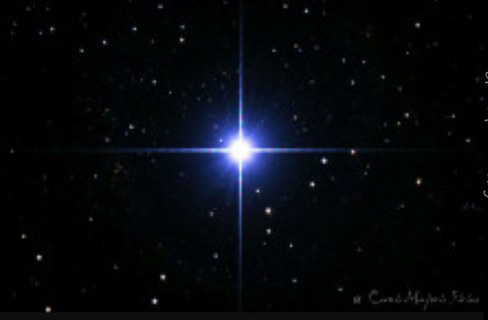
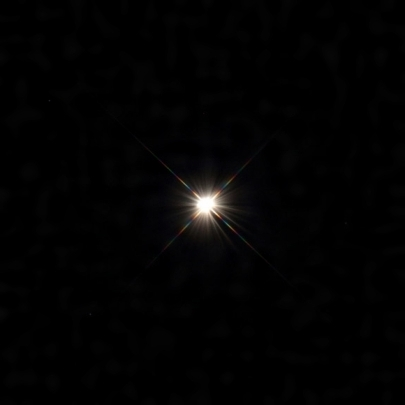
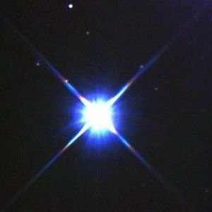
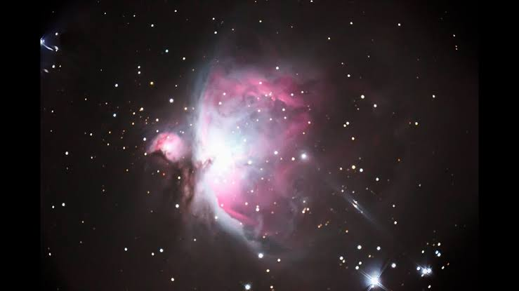
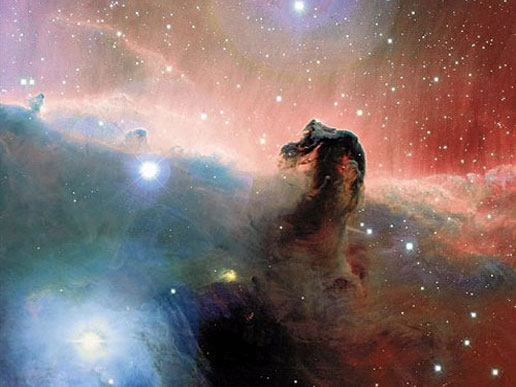
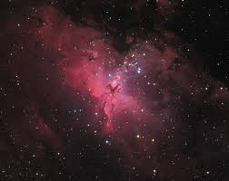

私が一番好きな天体は土星です。土星は太陽から6番目の、太陽系の中では木星に次いで2番目に大きな惑星である。巨大ガス惑星に属する土星の平均半径は地球の約9倍に当ります。平均密度は地球の1/8に過ぎないため、巨大な体積の割りに質量は地球の95倍程度である。そのため、木星型惑星の一種と分類されている。土星が好きな理由は地球から天体望遠鏡を使って見てみると、とても神秘てきで綺麗に見えるからです。

私が次に好きな天体は、金星です。太陽系で太陽に近い方から2番目の惑星。また、地球にもっとも近い公転軌道を持つ惑星である。地球型惑星であり、太陽系内で大きさと平均密度がもっとも地球に似た惑星であるため、「地球の姉妹惑星」と表現されることがある。金星が好きな理由は、朝方に見えるのを「明けの明星」、夕方に見えるものを「宵の明星」っていうぐらい、輝いて見えるから本当に好きだから。

私が三番目に好きな天体は、火星です。火星は太陽系の太陽に近い方から4番目の惑星である。地球型惑星に分類され、地球の外側の軌道を公転しています。火星は地球型惑星に分類される、いわゆる硬い岩石の地表を持った惑星である。火星が赤く見えるのは、その表面に地球のような水の海が無く、地表に酸化鉄（赤さび）が大量に含まれているためである。直径は地球の半分ほどで、質量は地球の約 10分の1に過ぎないため、火星の地表での重力の強さは地球の40パーセントほどしかないです。火星が好きな理由は、火星が最も地球に近づいたときはものすごくきれいに見えるからです。

私が一番好きな恒星は、シリウスです。シリウスはおおいぬ座で最も明るい恒星で全天21の1等星の1つで、太陽を除けば地球上から見える最も明るい恒星です。オリオン座のベテルギウス、こいぬ座のプロキオンともに、冬の大三角を形成しています。

私が二番目に好きな恒星は、アークトゥルスです。アークトゥルスはうしかい座α星、うしかい座で最も明るい恒星で全天21の1等星の1つである赤色巨星。カノープスに次いで全天で3番目に明るい恒星です。

私が三番目に好きな恒星は、スピカです。スピカはおとめ座α星、おとめ座で最も明るい恒星で全天21の1等星の1つ。春の夜に青白く輝く。

私が一番好きな星雲はオリオン大星雲です。オリオン大星雲はオリオン座の小三つ星付近に広がる、天の川銀河内にある散光星雲です。

私が次に好きな星雲は馬頭星雲です。馬頭星雲はオリオン座にある暗黒星雲です。オリオン座の三ツ星の東端にあるζ星の約27'南に位置します。その名前の通り、馬の頭に似た形で非常に有名な星雲です。

私が三番目に好きな星雲はわし星雲です。わし星雲はへび座に位置する散開星団と散光星雲の複合した天体である。散開星団の背景に散光星雲が広がっており、メシエ天体としての番号M16は散開星団の方に付けられた番号である。私はまだ写真でしか見たことがないけど、いつか見てみたいです。